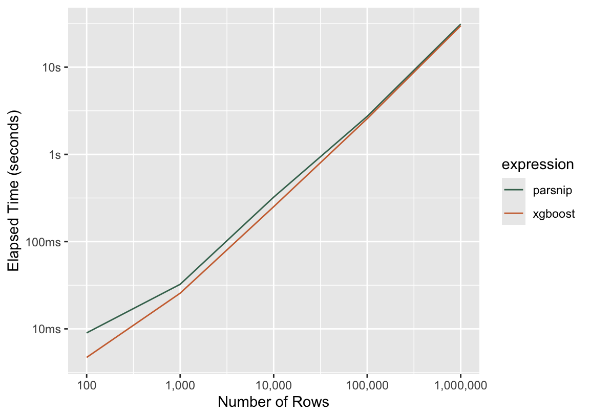

library(tidymodels)
library(bonsai)2 Models
2.1 Benchmarks
The following is a shiny app based on experimental benchmarks. For a given selection of model configurations, the app displays the time to resample various model configurations across a given number of rows of training data.
#| '!! shinylive warning !!': |
#| shinylive does not work in self-contained HTML documents.
#| Please set `embed-resources: false` in your metadata.
#| label: models-app
#| standalone: true
#| viewerHeight: 400
#| eval: true
#| echo: false
#| file: "data/models/app/app.R"This app allows for quickly juxtaposing the time that it might take to evaluate performance across various modeling approaches.
2.1.1 One data point
When the app first starts, the left-most point labeled boost_tree (lightgbm) is the observed time to sequentially evaluate an initial set of 10 models across 10 cross-validation folds of an 1000 row training set, resulting in 100 model fits on 900 rows, 100 sets of predictions of 100 rows, and metric calculations on each set of predictions. The actual benchmarking code is a bit more involved, but the code underlying that single data point looks something like the following.
First, we load core packages as well as the bonsai parsnip extension (for lightgbm support):
Next, we’ll simulate a dataset with 1000 rows using simulate_regression(), Efficient Machine Learning with R’s in-house simulation function:
d <- simulate_regression(1000)
d# A tibble: 1,000 × 16
outcome predictor_01 predictor_02 predictor_03 predictor_04 predictor_05
<dbl> <dbl> <dbl> <dbl> <dbl> <dbl>
1 12.5 -1.20 5.82 -0.250 1.75 -7.65
2 44.0 1.96 -1.23 -0.755 0.0723 2.07
3 -11.0 2.62 -1.63 4.55 -1.33 -1.36
4 9.80 -3.86 -1.17 3.08 -3.35 0.0360
5 31.0 -0.0483 -0.817 4.48 -2.64 5.76
6 16.4 3.75 3.33 -1.39 -0.800 -3.94
7 -5.12 1.33 0.964 0.402 2.01 -1.13
8 9.81 -2.28 4.52 -2.29 4.43 -1.18
9 26.3 -2.07 -0.268 -2.28 -4.93 -1.78
10 -8.80 -6.85 -3.45 -4.64 1.78 -1.21
# ℹ 990 more rows
# ℹ 10 more variables: predictor_06 <dbl>, predictor_07 <dbl>,
# predictor_08 <dbl>, predictor_09 <dbl>, predictor_10 <fct>,
# predictor_11 <fct>, predictor_12 <fct>, predictor_13 <fct>,
# predictor_14 <fct>, predictor_15 <fct>This step would happen as-is for every regression task on 1000 rows.
Now, splitting the data into 10 folds using cross-validation:
d_folds <- vfold_cv(d, v = 10)
d_folds# 10-fold cross-validation
# A tibble: 10 × 2
splits id
<list> <chr>
1 <split [900/100]> Fold01
2 <split [900/100]> Fold02
3 <split [900/100]> Fold03
4 <split [900/100]> Fold04
5 <split [900/100]> Fold05
6 <split [900/100]> Fold06
7 <split [900/100]> Fold07
8 <split [900/100]> Fold08
9 <split [900/100]> Fold09
10 <split [900/100]> Fold10Now, we specify a boosted tree model specification using the LightGBM engine. In this experiment, any tunable parameter (defined by whether tidymodels has a parameter definition that automatically kicks in when generating grids) is set to be tuned.
spec <-
boost_tree(
tree_depth = tune(),
trees = tune(),
learn_rate = tune(),
mtry = tune(),
min_n = tune(),
loss_reduction = tune(),
sample_size = tune(),
stop_iter = tune()
) %>%
set_engine("lightgbm") %>%
set_mode("regression")Each of these model fits are carried out with minimal preprocessors based on Tidy Modeling with R’s “Recommended Preprocessing” appendix (Kuhn and Silge 2022). In this case, Kuhn and Silge recommend that users impute missing values for both numeric predictors (we do so using the median for all) and categorical predictors (we do so using the mode).
rec <-
recipe(outcome ~ ., d) %>%
step_impute_median(all_numeric_predictors()) %>%
step_impute_mode(all_nominal_predictors())With our data resampled and a modeling workflow defined, we’re ready to resample this model. The resampling process will propose 10 different possible sets of parameter values for each parameter tagged with tune(). This will happen automatically under the hood of tune_grid(), but we can replicate this ourselves using dials:
extract_parameter_set_dials(spec) %>%
finalize(d) %>%
grid_space_filling(size = 10)# A tibble: 10 × 8
mtry trees min_n tree_depth learn_rate loss_reduction sample_size stop_iter
<int> <int> <int> <int> <dbl> <dbl> <dbl> <int>
1 1 445 23 10 1e-10 4.64e- 3 0.7 18
2 2 1555 2 15 1e- 3 2.45e- 4 0.5 12
3 4 889 31 4 1e- 7 3.16e+ 1 0.3 3
4 6 223 35 5 1e- 1 3.59e- 8 0.6 16
5 7 1111 10 2 1e- 9 1 e-10 0.9 8
6 9 2000 40 11 1e- 5 1.90e- 9 0.4 6
7 11 1777 14 1 1e- 2 1.67e+ 0 0.8 14
8 12 1 6 8 1e- 4 6.81e- 7 0.2 4
9 14 1333 18 7 1e- 8 1.29e- 5 0.1 20
10 16 667 27 13 1e- 6 8.80e- 2 1 10tune_grid() will evaluate those sets of values by fitting them to 10 different subsets of d.
set.seed(1)
res <- tune_grid(workflow(rec, spec), d_folds)The point in the above plot is the time that those 100 model fits took altogether; in other words, the time that we’d wait for tune_grid() to evaluate.
2.1.2 Why not just model fits?
This seems a bit involved for the purposes of getting a rough sense of how long a given model may take to fit; why don’t we just use default parameter values from tidymodels and pass the model specification straight to fit()?
There are a few reasons for this. In general, though, resampling a model specification across an initial set of possible parameter values is a fundamental unit of interactive machine learning. This initial resampling process gives the practitioner a sense for the ballpark of predictive performance she can expect for a given model task and how various parameter values may affect that performance. Does a higher learn_rate result in better predictive performance? How many trees is enough? A single model fit leaves the answer to all of these questions unknown.
Importantly, too, the time that a given model specification takes to fit can vary greatly depending on parameter values. For example, only exploring the time to fit() rather than resample across a set of values would obscure the difference in these two elapsed times:
spec <- boost_tree(mode = "regression", engine = "lightgbm")
bench::mark(
few_trees = fit(spec %>% set_args(trees = 10), outcome ~ ., d),
many_trees = fit(spec %>% set_args(trees = 1000), outcome ~ ., d),
check = FALSE
)# A tibble: 2 × 3
expression median mem_alloc
* <bch:expr> <bch:tm> <bch:byt>
1 few_trees 13.7ms 5.06MB
2 many_trees 458.8ms 1.41MBBy summing across many model fits that result in varied fit times, we can get a better sense for a typical time to fit across typical parameter values.
2.2 Tidymodels overhead
While the tidymodels team develops the infrastructure that users interact with directly, under the hood, we send calls out to other people’s modeling packages—or modeling engines—that provide the actual implementations that estimate parameters, generate predictions, etc. The process looks something like this:

When thinking about the time allotted to each of the three steps above, we refer to the “translate” steps in green as the tidymodels overhead. The time it takes to “translate” interfaces in steps 1) and 3) is within our control, while the time the modeling engine takes to do it’s thing in step 2) is not.
Let’s demonstrate with an example classification problem. Generating some random data:
set.seed(1)
d <- simulate_classification(n_rows = 100)
d# A tibble: 100 × 18
class two_factor_1 two_factor_2 non_linear_1 non_linear_2 non_linear_3
<fct> <fct> <dbl> <fct> <dbl> <dbl>
1 class_2 level_1 -1.17 level_1 0.554 0.814
2 class_1 level_1 0.261 level_2 0.688 0.929
3 class_2 level_1 -1.61 level_1 0.658 0.147
4 class_1 level_1 2.14 level_1 0.663 0.750
5 class_2 level_1 0.0360 level_1 0.472 0.976
6 class_1 level_2 -0.00837 level_1 0.970 0.975
7 class_2 level_1 1.05 level_2 0.402 0.351
8 class_1 level_1 1.49 level_1 0.850 0.394
9 class_2 level_1 0.967 level_2 0.757 0.951
10 class_2 level_2 0.603 level_1 0.533 0.107
# ℹ 90 more rows
# ℹ 12 more variables: linear_01 <dbl>, linear_02 <dbl>, linear_03 <dbl>,
# linear_04 <dbl>, linear_05 <dbl>, linear_06 <dbl>, linear_07 <dbl>,
# linear_08 <dbl>, linear_09 <dbl>, linear_10 <fct>, linear_11 <fct>,
# linear_12 <fct>…we’d like to model the class using the remainder of the variables in this dataset using a logistic regression. We can using the following code to do so:
fit(logistic_reg(), class ~ ., d)parsnip model object
Call: stats::glm(formula = class ~ ., family = stats::binomial, data = data)
Coefficients:
(Intercept) two_factor_1level_2 two_factor_2
7.080808 -7.463598 -2.821078
non_linear_1level_2 non_linear_2 non_linear_3
0.550041 -0.878752 -2.039599
linear_01 linear_02 linear_03
-0.153653 -0.273809 -0.005318
linear_04 linear_05 linear_06
1.248566 0.880917 -0.112520
linear_07 linear_08 linear_09
-0.925063 1.261782 -1.251249
linear_10level_2 linear_10level_3 linear_10level_4
-18.020101 -3.242219 -1.336644
linear_11level_2 linear_11level_3
-0.640718 -4.402850
[ reached getOption("max.print") -- omitted 4 entries ]
Degrees of Freedom: 99 Total (i.e. Null); 76 Residual
Null Deviance: 134.6
Residual Deviance: 54.75 AIC: 102.8The default engine for a logistic regression in tidymodels is stats::glm(). So, in the style of the above graphic, this code:
- Translates the tidymodels code, which is consistent across engines, to the format that is specific to the chosen engine. In this case, there’s not a whole lot to do: it passes the preprocessor as
formula, the data asdata, and picks afamilyofstats::binomial. - Calls
stats::glm()and collects its output. - Translates the output of
stats::glm()back into a standardized model fit object.
Again, we can control what happens in steps 1) and 3), but step 2) belongs to the stats package.
The time that steps 1) and 3) take is relatively independent of the dimensionality of the training data. That is, regardless of whether we train on one hundred or a million data points, our code (as in, the translation) takes about the same time to run. Regardless of training set size, our code pushes around small, relational data structures to determine how to correctly interface with a given engine. The time it takes to run step 2), though, depends almost completely on the size of the data. Depending on the modeling engine, modeling 10 times as much data could result in step 2) taking twice as long, or 10x as long, or 100x as long as the original fit.
So, while the absolute time allotted to steps 1) and 3) is fixed, the portion of total time to fit a model with tidymodels that is “overhead” depends on how quick the engine code itself is. How quick is a logistic regression with glm() on 100 data points?
bench::mark(
fit = glm(class ~ ., family = binomial, data = d)
) %>%
select(expression, median)# A tibble: 1 × 2
expression median
* <bch:expr> <bch:tm>
1 fit 2.4msAbout a millisecond. That means that, if the tidymodels overhead is one second, we’ve made this model fit a thousand times slower!
In practice, the overhead here has hovered around a millisecond or two for the last couple years, and machine learning practitioners usually fit much more computationally expensive models than a logistic regression on 100 data points. You’ll just have to believe me on that second point. Regarding the first:
bm_logistic_reg <-
bench::mark(
parsnip = fit(logistic_reg(), class ~ ., d),
stats = glm(class ~ ., family = binomial, data = d),
check = FALSE
)Remember that the first expression calls the second one, so the increase in time from the second to the first is the “overhead.” In this case, it’s 0.7884505 milliseconds, or 24.8% of the total elapsed time.
So, to fit a boosted tree model on 1,000,000 data points, step 2) might take a few seconds. Steps 1) and 3) don’t care about the size of the data, so they still take a few thousandths of a second. No biggie—the overhead is negligible. Let’s quickly back that up by fitting boosted tree models on simulated datasets of varying sizes, once with the XGBoost interface and once with parsnip’s wrapper around it.

This graph shows the gist of tidymodels’ overhead for modeling engines: as dataset size and model complexity grow larger, model fitting and prediction take up increasingly large proportions of the total evaluation time.
Section 1.1.3 showed a number of ways users can cut down on the evaluation time of their tidymodels code. Making use of parallelism, reducing the total number of model fits needed to search a given grid, and carefully constructing that grid to search over are all major parts of the story